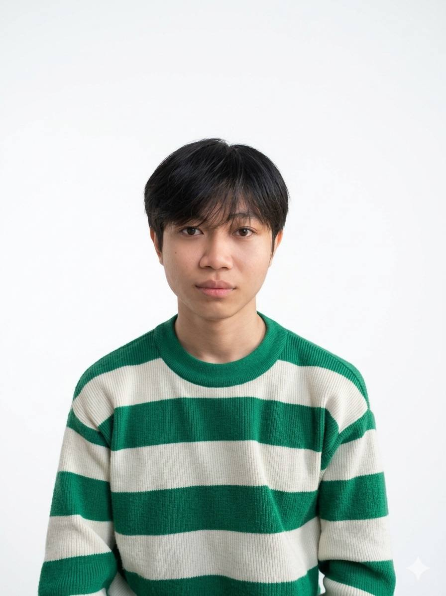
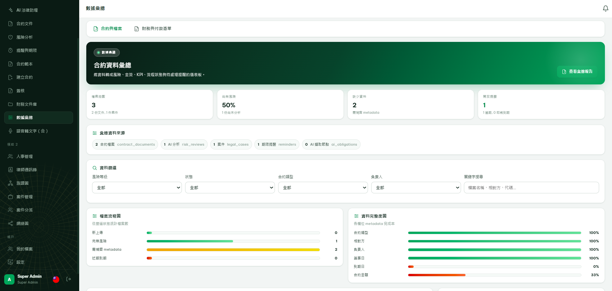
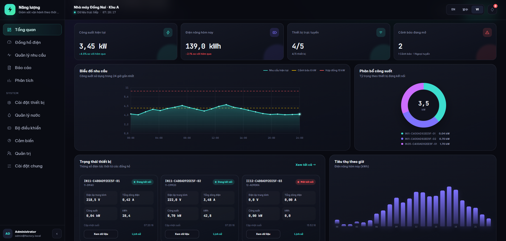
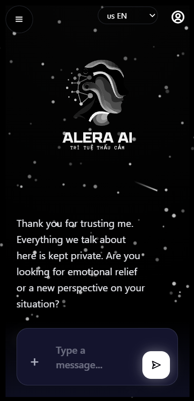

▣
Short-form editing
YouTube Shorts, TikTok and Reels. Strong opening hooks, concise storytelling and clear on-screen text.
I'm Vũ Đình Tư (Dev), a video editor with 3 years of hands-on experience. I turn stories into engaging videos through thoughtful pacing, visual storytelling, sound and carefully crafted details.
My journey began with a passion for art and photography. I taught myself editing, worked on short-form videos for a Korean company, and went on to produce and operate YouTube channels for US audiences.

Beyond cuts and transitions, I care about how a video feels — its rhythm, clarity, emotion and the reason someone keeps watching.
YouTube Shorts, TikTok and Reels. Strong opening hooks, concise storytelling and clear on-screen text.
Structured narrative edits for videos around 20–40 minutes, with attention to flow and viewer engagement.
Readable subtitles, kinetic text, smooth motion and purposeful effects that support the story.
Thoughtful BGM and SFX placement, color adjustments, visual consistency and careful asset selection.
Practical AI tools for efficient research, creative workflows and media production, with human review.
Firsthand YouTube channel experience helps me consider audience expectations, clarity and retention from the edit.
Art and photography taught me to notice the details. Editing gave me a way to turn them into stories.
Started learning video editing independently, motivated by art, photography and storytelling.
Worked with a Korean client on short videos, focusing on pacing, text, sound and consistent delivery.
Expanded into operating YouTube channels and producing both short and longer narrative-driven content for American viewers.
Selected public YouTube channels I have worked on. Follow the links to view published content and editing styles.
Published channel portfolio — storytelling, visual selection, pacing and editing.
Story-led YouTube content with selected imagery, subtitles, timing and sound.
For additional examples or a style-specific editing test, please get in touch.
Collaborating with international clients taught me to value clear communication, responsibility and a consistent standard of quality.
Thank you for all your effort and hard work! I really hope we get to work together again under a better opportunity.
Alongside editing, I work with full-stack development, backend systems and applied AI. This technical background informs how I approach workflows and automation.

Document and data management systems with workflows, APIs and role-based access.

Monitoring and alert features supporting electric-vehicle charging operations.

Applied AI solutions, retrieval-augmented generation and data processing workflows.
View project ↗I'm open to video editing collaborations, YouTube channel work and creative technology projects. Let's discuss your brief, references and timeline.